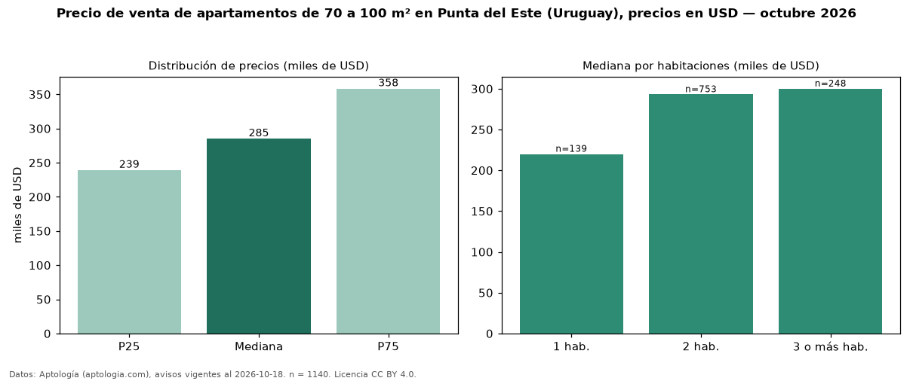

Precio de venta de apartamentos de 70 a 100 m² en Punta del Este (Uruguay), precios en USD — octubre 2026
Con 1.140 avisos vigentes, el precio mediano de apartamentos de 70 a 100 m² en venta en Punta del Este (Uruguay) es USD 285.000. Frente a la mediana de todos los apartamentos en venta de Punta del Este (USD 360.000, n = 5.198), queda 21 % por debajo; este segmento reúne el 22 % de esos avisos. Por metro cuadrado, la mediana es USD 3.431/m² (n = 1128), 5 % por debajo del conjunto de referencia (USD 3.604/m²). El área mediana anunciada es 84 m². El segmento con más oferta es el de 2 habitaciones (753 avisos, mediana USD 293.000); pasar de 1 habitación a 3 o más habitaciones cambia la mediana +36 %. La cuota de mantenimiento o condominio mediana declarada es USD 550 al mes (n = 133). La mitad central de los avisos va de USD 239.029 a USD 358.250 (razón 1,5), una dispersión moderada. Datos: Aptología (aptologia.com), CC BY 4.0 — https://www.aptologia.com/uy/venta/punta-del-este. Archivos: PDF, CSV con las cifras y gráfica PNG.

| Avisos únicos | 1140 |
|---|---|
| Percentil 25 | COP 239.028 |
| Mediana | COP 285.000 |
| Percentil 75 | COP 358.250 |
| Mediana por m² | COP 3.431 |
Fuente: avisos vigentes de portales inmobiliarios recopilados por Aptología, deduplicados (mínimo 30 avisos únicos por celda). Precios pedidos, no cerrados. Fecha: 2026-10-18.